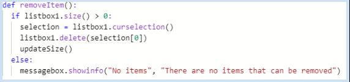

The purpose of this program is to keep track of what's in your inventory. In the video it shows how to add items, remove items, save items, open previous items, and how to clear items. I typed in a product and added the item to a txt file. I can remove, save, clear, or open from the txt file.
The name of the list is removeItem or No items. It looks to see if the listbox is full, if it is it will delete the selected item. And if there is nothing it will display a text. If I did not use this method I would either use nothing or have it open a txt file and say the current message.